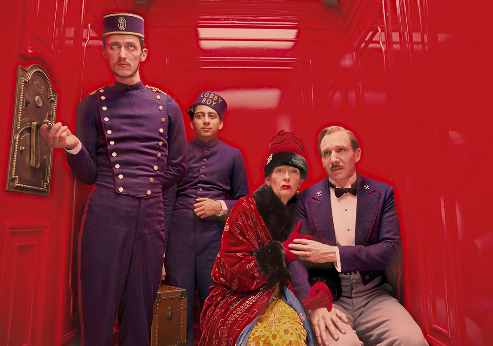

Wes Anderson’s cinematic masterpiece, The Grand Budapest Hotel, is a perfect blend of an all-stars ensemble, aesthetically pleasing visuals, and intriguing storyline. This 2013 motion picture revolves around the titular hotel, its employees, and occupants. The Grand Budapest Hotel has traces of nostalgic elements, and would often imbue wanderlust to its viewers. Anderson’s love for symmetrical shots is apparent in the film, while other familiar elements like color schemes, fast paced story progression, and action sequences are also present in the film. Told through the narratives of ‘the Author’ (Tom Wilkinson and Jude Law), The Grand Budapest Hotel is set in a fictional Eastern European country, Zubrowka, in the midst of a war. The movie spawns across different timelines, as different characters recite their stories from different eras and perspectives. The film is divided into 7 chapters, or parts: a prologue, M. Gustave, Madame C.V.D.u.T, Check Point 19: Criminal Internment Camp, The Society of the Crossed Keys, The Second Copy of the Second Will, and an epilogue. Sitting proudly on top of a hill in a mountainous area resembling the Alps, Grand Budapest Hotel was once a renowned establishment.

The movie begins in the present, while slowly moving backwards and the story is told through flashbacks within flashbacks. The Author interviews the proprietor in the 1960’s, Zero Moustafa (F. Murray Abraham and Tony Revolori), who then recounts his story of working as a bellboy under the supervision of concierge Monsieur Gustave (Ralph Fiennes) when he was young. The focal point of this movie is Zero’s adventures with Monsieur Gustave in the 1930’s. During his time as bellboy in Grand Budapest, he notices Gustave’s affairs with rich and aged women. His affair with Madame Celine Villeneuve Desgoffe und Taxis (Tilda Swinton) is what triggered the events in the movie. When Madame Desgoffe und Taxis passed away, she willed an infamous painting to Gustave as a thank you note for keeping her company in her last days. Her mischievous son, Dmitri (Adrien Brody) and her 3 daughters were not willing to give the painting to Gustave. Gustave and Zero stole the painting, and the next morning, Gustave was falsely accused and arrested for Madame D’s murder. While imprisoned at Check Point 19, Gustave escaped with the help of Mendl’s baker and Zero’s love interest, Agatha (Saoirse Ronan), who smuggled digging tools into the prison. There is a point in the movie where the older Zero stopped reciting his story, and professed difficulty in discussing his lover. The rest of the movie deals with Gustave’s escape, Madame D’s lost will and her status as the hotel’s owner, and the aftermath of the whole debacle.

The fate of Agatha and Gustave was revealed later in the epilogue, which turned the whole promising and upbeat pace of the story into a glum and desolate note. Guards at the Lutz border shot Gustave due to his ‘disorderly conduct’, while Agatha and her son succumbed to an illness called the “Prussian Grippe”, leaving Zero alone with all Gustave’s fortune and the hotel.
Other big names in the ensemble cast include Jeff Goldblum, Willem Dafoe, Edward Norton, Lea Seydoux, Owen Wilson, Jason Schwartzman, and Bill Murray.